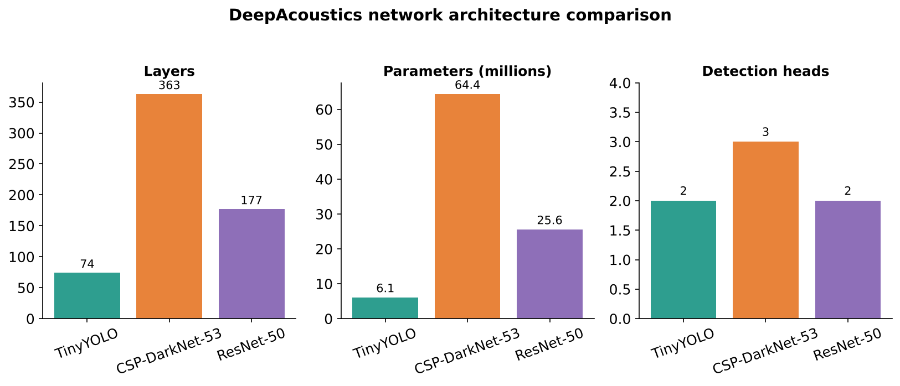
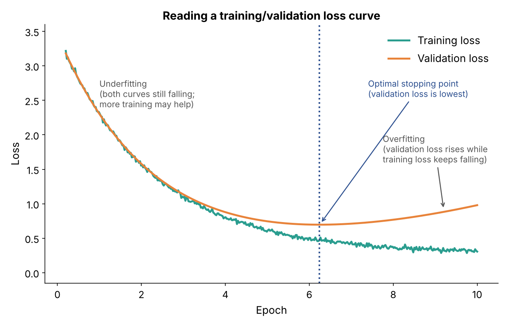
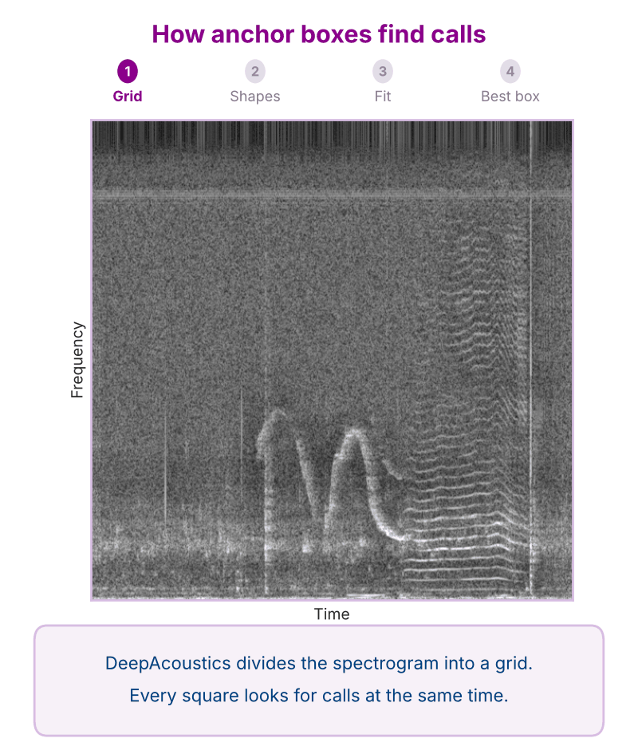
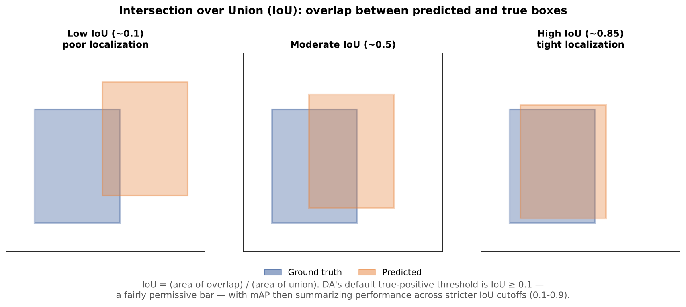
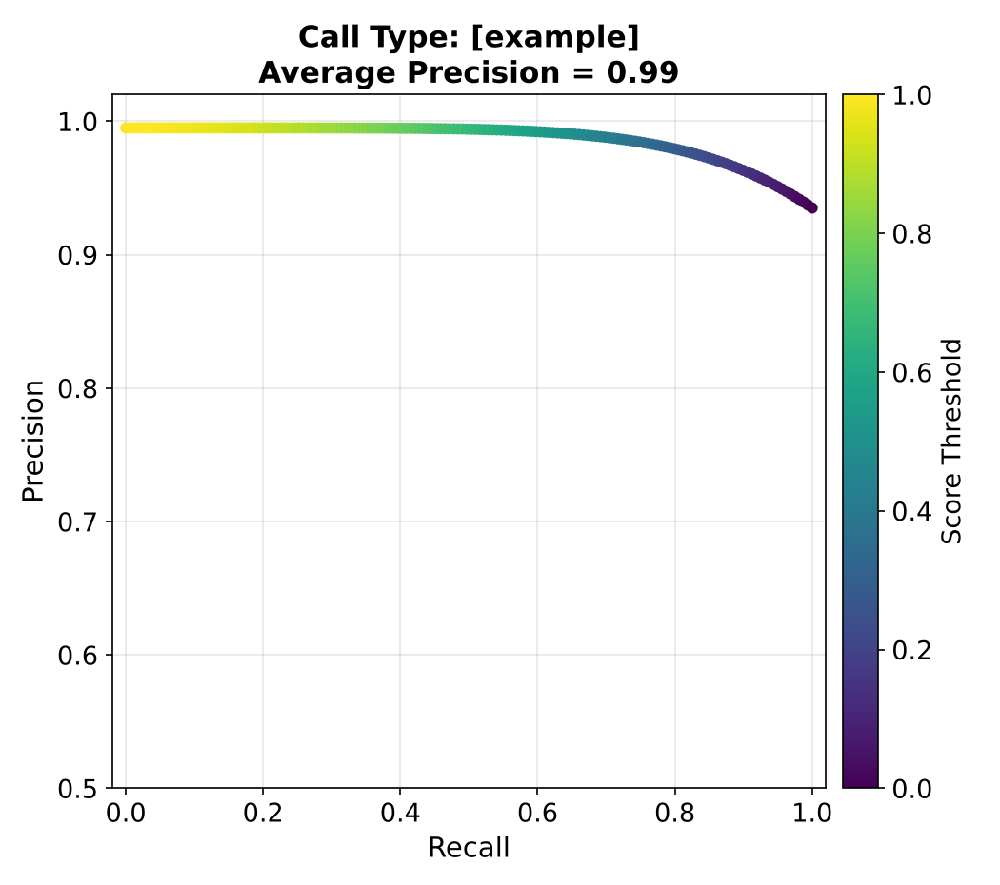

Network Architectures, Hyperparameters & Performance Metrics
This page lays out the technical building blocks referenced throughout the rest of the guide: the network architectures DeepAcoustics offers, the hyperparameters you can tune when training one, and the metrics used to evaluate how well a trained network performs. The hands-on, step-by-step process of actually creating training images, training a network, and running performance tests in DeepAcoustics is covered separately under Network Training & Testing; this page is the conceptual reference those steps point back to.
Available architectures
DeepAcoustics offers three pre-trained YOLOv4 backbone architectures. TinyYOLO and CSP-DarkNet-53 are pre-trained on COCO, a segmentation-based database of over 330,000 object images; ResNet-50 is pre-trained on ImageNet, a bounding-box-based database of roughly 1.5 million images.

| Architecture | Layers | Parameters | Detection heads | Pretrained on |
|---|---|---|---|---|
| TinyYOLO | 74 | 6.1 million | 2 | COCO |
| CSP-DarkNet-53 | 363 | 64.4 million | 3 | COCO |
| ResNet-50 | 177 | 25.6 million | 2 | ImageNet |
TinyYOLO is the lightest and fastest to train, making it the natural starting point for optimizing other settings before moving to the larger architectures. CSP-DarkNet-53 is the largest and most complex of the three, with roughly five times TinyYOLO’s parameter count and an additional detection head. ResNet-50 sits in between, and additionally requires a fixed 224×224 input resolution (TinyYOLO and CSP-DarkNet-53 instead require an input resolution that is a multiple of 32 pixels).ectures. To be added once available.
Key hyperparameters
Training behavior is governed by a handful of settings a user can tune:
- Learning rate: controls how large a step the network takes when updating its weights after each training batch. Values of 0.0001, 0.0005, 0.001, and 0.002 have all been tested; too high a rate can cause unstable training, too low can make training impractically slow.
- Batch / mini-batch size: the number of training images processed together before each weight update. Values from 16 up to 512 have been tested; larger batches use more GPU memory but can produce more stable gradient estimates.
- Epochs: the number of complete passes through the training dataset. Training is typically monitored via a loss curve (below) to judge when additional epochs stop helping.
- Optimizer: the algorithm used to update network weights (e.g., sgdm, RMSProp, adam in MATLAB’s implementation); different optimizers can affect convergence speed and stability.
- Validation split: the percentage of training data automatically held back each epoch to monitor performance on unseen data during training, rather than supplying a separate validation folder. The reference network used an 18% automatic split.

How to read a training/validation loss curve: both curves falling together (underfitting; more training may help), both low and stable (good fit), or validation loss rising while training loss keeps falling (overfitting; stop near the point where validation loss is lowest).
Anchor boxes
YOLO-family networks don’t draw each bounding box from scratch. Instead, they start from a small set of ready-made box shapes called anchor boxes and learn how to move and stretch the closest shape to fit each call. DeepAcoustics works out the anchor shapes from the bounding boxes in your own training annotations, so they reflect the real shapes of your calls.

- Divide the spectrogram into a grid. Every square in the grid looks for calls at the same time, in a single pass through the network.
- Start from a few box shapes. Each square has the same set of anchor box shapes, centered on that square. The shapes do not slide or scan across the image.
- Move and stretch the closest shape. The square containing the center of a call takes the closest-matching anchor shape and shifts and stretches it to fit the call.
- Keep the best box. Every square makes a guess with a confidence score from 0 to 1. Guesses on empty noise score low and are dropped by the confidence threshold. Where several boxes overlap the same call, only the highest-scoring box is kept (a step called non-maximum suppression).
Common questions
- How does the network know how to fit a call? It learns from your annotations. During training, each annotated call is assigned to the square containing its center and the closest anchor shape, and the network is corrected based on how closely its adjusted box matches your annotation.
- Is there a call in every square? No. Most squares contain only noise and learn to give very low scores. A square only needs to contain the center of a call; its box can extend well beyond the square, and its prediction draws on a much larger area of the image around it.
- Where do false positives come from? When a guess on something in the noise (a ship, another species, a mooring sound) looks enough like a call to score above the confidence threshold, it is kept as a detection.
Choosing the number of anchor boxes
- Use the mean IoU curve: when you choose Customize during training, DeepAcoustics can plot mean IoU (how well the anchor shapes match your annotated boxes) for 1 to 15 anchors. Choose the number where the curve levels off.
- More anchors: a closer starting match for unusually shaped calls and tighter boxes, which helps when call shapes vary a lot (for example, multiclass networks with long and short calls). The cost is more computation and memory and a risk of overfitting; very high counts have crashed training on some machines.
- Fewer anchors: faster, but calls far from every shape are harder to fit, which can mean looser boxes or missed calls.
- Valid counts: Tiny YOLO and ResNet-50 split the anchors across two detection heads and need an even number; CSP-DarkNet-53 has three heads and needs a multiple of three. DeepAcoustics rounds up if needed. The defaults are 8 (9 for CSP-DarkNet-53).
- Comparing architectures: keep the total number of anchors as close as possible (for example, 6 on Tiny YOLO compares to 6 on CSP-DarkNet-53, and 8 compares to 9).
- Resolution matters: anchors are calculated at the resized image resolution, so networks trained at different image sizes have different anchors even with the same anchor count.
Variability across training runs
Because random factors (weight initialization, data shuffling, augmentation draws) influence each training run, the same TinyYOLO configuration was trained three independent times in developing the reference network, and each resulting network evaluated separately, to characterize how much performance varies for reasons unrelated to the chosen hyperparameters. This context is useful when comparing two configurations that differ only slightly in a performance metric. A difference smaller than the run-to-run variability isn’t necessarily meaningful.
Performance metrics
Intersection over Union (IoU)
IoU measures how much a predicted bounding box overlaps a ground-truth (manually annotated) box. It is calculated as the area of their overlap divided by the area of their union, so not a straight percentage overlap in boxes. A higher IoU threshold demands tighter overlap and is therefore a stricter detection criterion.

IoU = (area of overlap) / (area of union).
- Ground-truth box: a bounding box drawn by a person (an annotation), defined by its position, width, and height on the spectrogram.
- Predicted box: a bounding box produced by the network (a detection).
- IoU threshold: the minimum IoU a predicted box needs with a ground-truth box to count as a correct detection (a true positive). Below the threshold, it counts as a false positive. You choose this threshold when you run Performance Metrics (see Performance Testing). DeepAcoustics suggests 0.5, a common value in image object detection, but the right threshold is up to you and depends on what you need the detections for.
Precision, recall, and F1-score
DeepAcoustics’ built-in performance evaluation compares network detections against a ground-truth annotation file. Precision, recall, and F1-score are reported with every detection included (a confidence score threshold of 0), and a detection counts as a true positive if its IoU with a ground-truth box of the same call type reaches the IoU threshold you choose.
- Precision: the proportion of the network’s detections that were correct (true positives ÷ all detections).
- Recall: the proportion of actual annotated calls the network successfully detected (true positives ÷ all ground-truth calls).
- F1-score: the harmonic mean of precision and recall, giving equal weight to both and penalizing large gaps between them more than a simple average would.
Average precision (AP) and mean average precision (mAP)
Classification metrics such as precision and recall only ask whether a call is present. Object detection also asks where the call is, so it needs metrics that account for how well the boxes fit:
- IoU: how well a predicted box overlaps the annotated box (see above).
- Average precision (AP): combines precision and recall at a given IoU threshold into a single number.
- Mean average precision (mAP): averages AP across a range of IoU thresholds, summarizing overall detection performance.
A single confidence threshold only tells part of the story. To calculate AP, DeepAcoustics steps the confidence (score) threshold down from the highest score to 0 and records precision and recall at each step, producing a precision-recall curve. IoU is a key part of this calculation, because it decides which detections count as correct at each step. AP is the area under the precision-recall curve, smoothed using interpolation (at each recall level, the precision is taken as the highest precision reached at that recall or higher). An AP of 1 would mean the network found every call with no false positives at every threshold.

An example precision-recall curve in the style of DeepAcoustics’ performance output (example data, not a real evaluation run). Each point is one confidence (score) threshold, colored by its value, and the average precision is shown in the title.
Mean average precision (mAP) repeats the AP calculation at nine IoU thresholds from 0.1 to 0.9 (in steps of 0.1) and averages the results. It therefore captures both how completely calls are detected and how tightly the predicted boxes fit them.
Because the “Noise” class exists only as a training-time workaround for a MATLAB datastore limitation (true negatives can’t otherwise be included in training), performance metrics are not meaningful for, and are not reported on, that class.